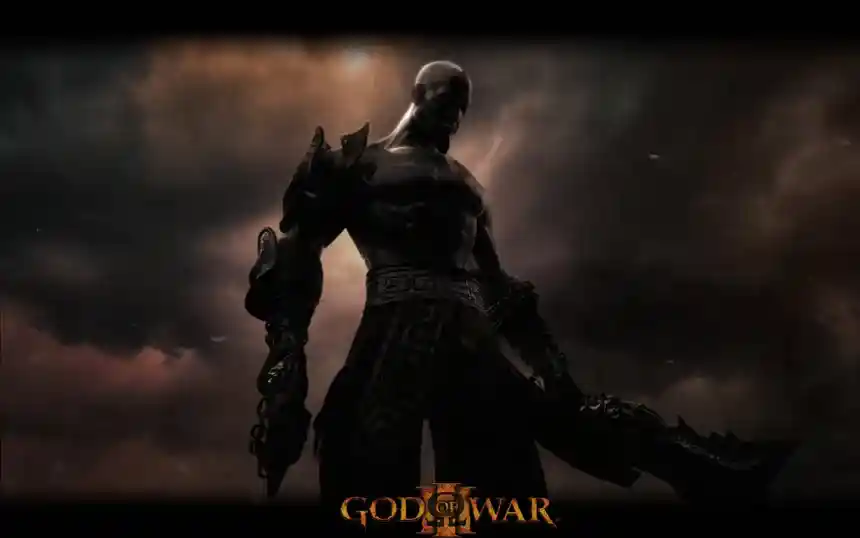
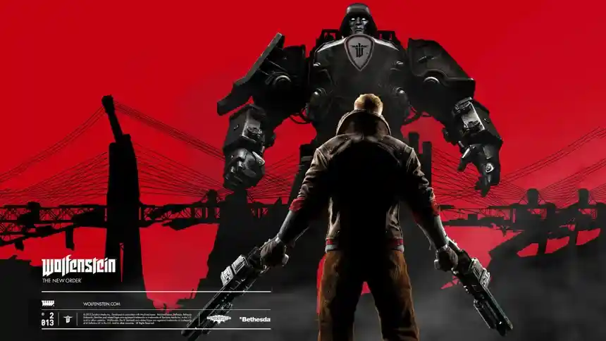
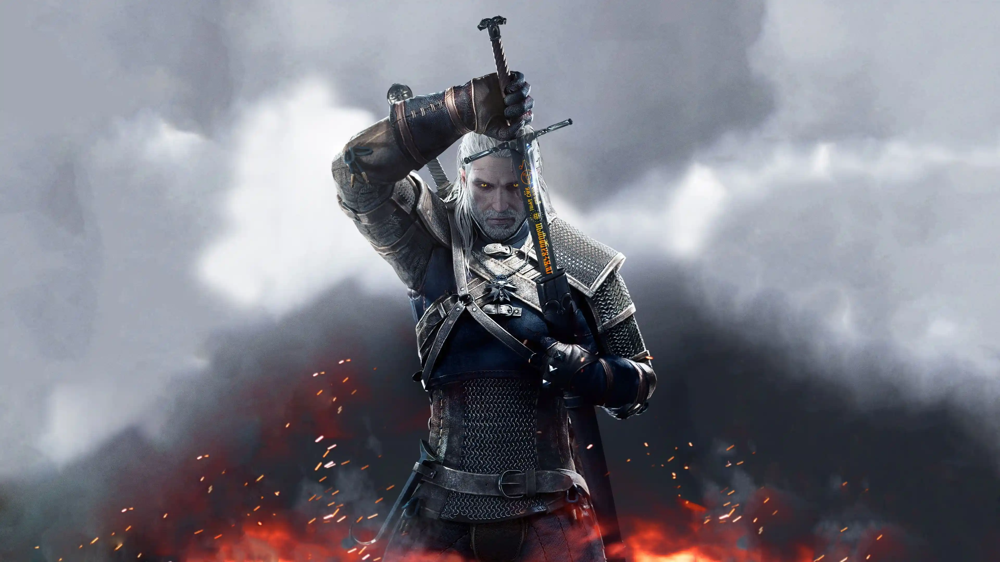
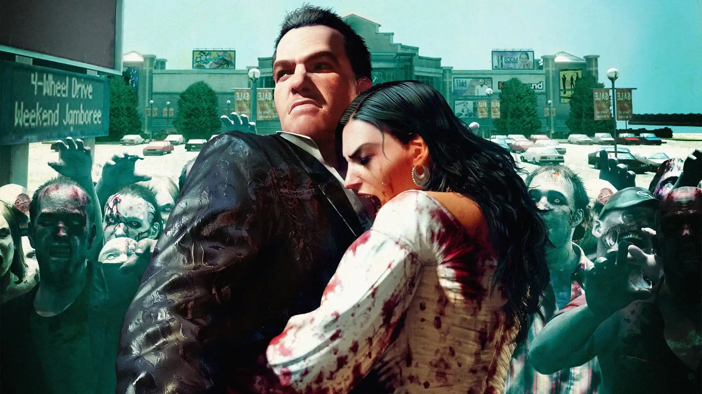

Orden cronológico de videojuegos
En Cronología Gamer encontrarás el orden cronológico de los videojuegos más importantes. Descubre la historia completa de sagas como The Last of Us, God of War, Resident Evil y muchas más.
El orden cronológico permite entender la historia real de cada juego, incluyendo precuelas, secuelas y eventos ocultos que no siguen el orden de lanzamiento.
El objetivo de esta web es ofrecer una guía clara y completa para entender el orden de los juegos y su historia, incluso en sagas con líneas temporales complejas.
¿Qué es Cronología Gamer?
Cronología Gamer es un sitio dedicado a explicar el orden cronológico, historia completa, personajes y universo de las sagas más importantes de los videojuegos.
Aquí encontrarás explicaciones detalladas sobre franquicias como Resident Evil, Metal Gear, The Last of Us, Dead Space, God of War, Alan Wake, The Witcher y muchas más.
El objetivo del sitio es ayudar a nuevos jugadores y fans veteranos a comprender las líneas temporales, conexiones entre juegos, personajes importantes y eventos principales de cada universo.
Todas las guías están organizadas cronológicamente para facilitar la comprensión de la historia completa de cada saga.
Sagas destacadas
Cronología Gamer reúne guías completas de sagas legendarias y universos narrativos complejos.
- Resident Evil y la historia de Umbrella Corporation.
- Metal Gear y la compleja línea temporal de Big Boss y Solid Snake.
- The Last of Us y la historia de Joel y Ellie.
- Dead Space y el horror espacial de Isaac Clarke.
- Alan Wake y el universo sobrenatural de Remedy.
- The Witcher y el viaje de Geralt de Rivia.
- God of War desde la mitología griega hasta el mundo nórdico.
Contenido actualizado
El sitio se actualiza constantemente con nuevas sagas, personajes, cronologías, análisis y explicaciones detalladas sobre el universo de cada videojuego.
Nuestro objetivo es crear una biblioteca completa de historias y lore gamer en español.
Última actualización del sitio: Mayo 2026.
Explora las historias completas
Cada página de Cronología Gamer incluye información detallada sobre personajes, enemigos, finales, líneas temporales y acontecimientos importantes de cada franquicia.
Las guías están diseñadas tanto para nuevos jugadores como para fans veteranos que quieran entender todos los detalles de sus sagas favoritas.
Resident Evil
Descubre el orden completo de la saga y su historia.
Alan Wake
Conoce la línea temporal y su universo narrativo.
Uncharted
Descubre la cronología completa de la saga de Nathan Drake.

God of War
Saga completa desde Grecia hasta la era nórdica.
Metal Gear
Conoce la compleja línea temporal de la saga.
The Last of Us
Historia completa de Joel y Ellie.
Red Dead Redemption
Historia completa de Arthur Morgan y John Marston.

Wolfenstein
Historia completa, saga clásica y moderna, personajes y cronología.

The Witcher
Historia completa de Geralt de Rivia, cronología y mundo de la saga.

Dead Space
Historia completa de Isaac Clarke, los Necromorfos y el horror espacial de la saga.
The Evil Within
Historia completa de Sebastian Castellanos, STEM y el terror psicológico de la saga.

Dead Rising
Cronología completa de Frank West, Willamette y los brotes zombis de la saga.